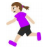
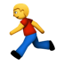
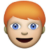
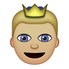
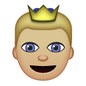

| |
| Version | 1.0 (draft 3) |
| Editors | Mark Davis (Google Inc.), Peter Edberg (Apple Inc.) |
| Date | 2016-05-25 |
| This Version | http://www.unicode.org/reports/tr52/tr52-3.html |
| Previous Version | http://www.unicode.org/reports/tr52/tr52-1.html |
| Latest Version | http://www.unicode.org/reports/tr52/ |
| Latest Proposed Update | http://www.unicode.org/reports/tr52/proposed.html |
| Revision | 3 |
This document provides provides a new way of representing customizations of Unicode emoji characters. The first specified customizations provide for flags for subdivisions of countries (such as Scotland or California), gender variants (such as female runners or males raising a hand), hair color variants (a red-haired dancer), and directional variants (pointing a hand or bicyclist to the right).
Work on this document has been suspended, pending investigation into whether ZWJ sequences would provide a better solution in the near term, at least for the highest priority feature: gender.
This document is a proposed draft Unicode Technical Standard. This document may be updated, replaced, or superseded by other documents at any time. Publication does not imply endorsement by the Unicode Consortium. This is not a stable document; it is inappropriate to cite this document as other than a work in progress.
A Unicode Technical Standard (UTS) is an independent specification. Conformance to the Unicode Standard does not imply conformance to any UTS.
Please submit corrigenda and other comments with the online reporting form [Feedback]. Related information that is useful in understanding this document is found in the References. For the latest version of the Unicode Standard, see [Unicode]. For a list of current Unicode Technical Reports, see [Reports]. For more information about versions of the Unicode Standard, see [Versions].
There are many requests for variants of Unicode emoji. This document provides a concrete proposal for a mechanism that could be used for such customization, using the Unicode TAG characters. This approach allows the creation of variant emoji images without waiting for them to be encoded, and has been designed to be extensible.
The basic idea is like that of skin tone modifiers, used when a user selects an olive-skinned emoji on the keyboard. Internally that emoji consists of a base emoji followed by a skin-tone modifier that indicates that the base emoji should be olive-skinned. The olive-skinned emoji looks like a single character to the user, and behaves as a single emoji character in display, line break, and other processing.
With this TAG mechanism, a given emoji can have a specified list of special “TAG” characters after it that indicate a particular customization: the whole sequence is called an “emoji tag sequence”. The emoji tag sequence looks like a single character to the user, and behaves as a single emoji character in display, line break, and other processing. The TAG mechanism differs from the skin-tone modifiers in being much extensible.
The gray image in the illustrations below represent a sequence of TAG characters; the exact sequence that would be used in each case is described in the Technical Specification. For example, the image on the left below would be what the user sees; the sequence on the right would be the internal representation. The TAG characters indicated by the gray “…✦” below would never be visible.
=
If the TAG sequence is invalid, or if the system doesn't support that tag sequence, the user would see an indication of that, such as:
 =
=
The Unicode emoji customization mechanism is used to request an alternate rendering of a particular emoji character. It is only used where the base emoji character is in some way generic, and the customization would be considered a variant of that base character. For example, it could be used to indicate that the MAN emoji should be shown with red hair, but not that the MAN emoji be shown as a cup of tea.
Only those emoji tag sequences that follow the specifications in this document are valid. Like the emoji sequences for different family groups (aka emoji zwj sequences), Unicode would catalog those sequences that are supported by major vendors, but would not recommend particular combinations.
The first specified customizations include flags, gender, hair color, and direction. The hair color, gender, direction, and emoji-modifiers could be applied to the same emoji, resulting in a combinatorial explosion of possible glyphs in fonts. The flag customizations also allow for a very large number of possible glyphs. Due to memory constraints, it is thus anticipated that only certain combinations would be supported by major vendors. There is no requirement or expectation that all of the possible combinations — or even any large subset of them — be supported by vendors, until there is technology in the fonts to deal with the combinatorics.
Flags. These customizations allow for additional emoji for images of a flag associated with particular regions, such as emoji depictions of the flag of Scotland or California.
=
They are limited to Unicode subdivisions (which generally correspond to ISO 3166-2 subdivisions), and valid 3-digit UN codes. Like the Regional_Indicator characters, they do not represent a specific image. One way to think of them is that they represent “a flag” for a region, not “the flag” for a region. This mechanism cannot be used for arbitrary flags. It cannot, for example, be used for a rainbow flag, the flag of a particular football club, or a pirate flag.
Gender. These customizations allow for emoji images with different genders.
 = 
Unicode itself does not normally specify the gender for emoji characters: the emoji character is RUNNER, not MAN RUNNING; POLICE OFFICER not POLICEMAN. For a greater sense of realism, however, vendors typically have picked a particular gender to display, even for the neutral characters.
The Gender customization allow vendors to display male, female, and neutral versions. Neutral doesn’t mean the default (untagged) presentation, which could be any of these three; it means a specifically a gender-neutral presentation. These customizations are to mark appearance, and not gender identification.
The following is a draft list of emoji characters that would allow customizations of gender. The comment (after #) includes the version of Unicode where the character was encoded, an image, and the character name.
Review Note: the images are currently characters, so the appearance will depend on the platform people view them on. They will be supplemented by an image so that people can read this document without having emoji support.
26F9 # 5.2 (⛹) PERSON WITH BALL |
1F5E3 # 7.0 (🗣) SPEAKING HEAD IN SILHOUETTE |
This includes characters that have explicit gender in their names, where there is not a corresponding character of the other gender (MAN vs WOMAN).
Review Note: Some characters encoded to form gender pairs might not have been encoded had this mechanism been available and widely implemented earlier. However, it is too late to remove these characters.
Review Note: Possible removals from the base character list above: For the 9.0 sports figures, we could drop those for which we have consensus to only show neutral images. We need to look at whether JUGGLING might be a person or should not be. Finally, we are considering removal of the three “IN SILHOUETTE” characters (two BUSTS, one SPEAKING HEAD).
Hair Color. These customizations allow for emoji images with different hair colors.
 =
There are hundreds of possible distinctions among hair color, but because emoji are presented with a “cartoon” style it suffices to have just a few broad choices; that is also important to avoid font-size problems. The supported list is BLACK, BLONDE, BROWN, RED, GRAY, with the addition of Bald (no hair). This list is based on the distinctions made in the US Online Passport form, the UN Grounds Pass application, and other forms such as driver’s licences.
The following is a draft list of emoji characters that would allow customizations of hair color:
26F9 # 5.2 (⛹) PERSON WITH BALL |
1F487 # 6.0 (💇) HAIRCUT |
Direction. These customizations allow for emoji images to have different directions.
=
Some characters are typically presented with a direction that may be semantically significant in sequences of emoji: such as pointing in the direction of an action. Unfortunately, for historical reasons the “default” direction is fairly arbitrary; you see some emoji pointing left 🎥 and others pointing right 📽.
For example, controlling the direction allows for different compositions with hands around faces:
… …
…
Or, when someone is trying to say “then the princess stabbed the prince” when commenting on the Game of Thrones, it would be far more natural to see (a) below rather than (b), which could be interpreted as “the prince stabbed the princess”:
a) … …
…
 …
…
b) …… …
…
The emoji tag sequences allow for both directions to be expressed and interchanged.
The following is a draft list of emoji characters that would allow customizations of direction:
26CF # 5.2 (⛏) PICK |
1F528 # 6.0 (🔨) HAMMER |
Review Note: There are many possible characters that could usefully have direction applied to them. However, we should start out with just small number of base characters, and expand as necessary, probably winnowing down the above list. For the initial list, characters that already typically point to the left are omitted.
A major difference for the Direction customization is that the images simply need to be mirrored, thus making essentially no difference in the size of the font (if the technology permits).
Private Use. There are also private-use tag sequences, which allow for experimentation and interchange in closed systems, but which are not suitable for general interchange. For more information, see the Technical Specification.
Unsupported. Where the emoji tag sequence is not supported by an implementation, the tag characters are invisible and occupy no space. If the implementation is aware of the tag mechanism, but the sequence is invalid or the implementation does not support a particular sequence, then the fallback character should be displayed with a question mark superimposed, such as the following:
=
That way, the recipient is notified that there is something odd about the character; that it isn’t exactly what the sender intended. The above appearance is not normative: the goal is have a superimposed question mark, but there could be alternate appearances so that the base character is less obscured. However, an implementation cannot show a variant that is not specified by Unicode, unless it uses a Private Use tag sequence.
Review Note: one by-product of the direction of this work is that the Emoji SC and UTC should focus primarily on “generic” emoji characters, rather than very specific versions.
Review Note: We considered various other models:
Any Unicode-conformant implementation that implements emoji tag sequences must do so as described in this document:
Review Note: The following are draft clauses, and will need to be refined.
C1. No emoji tag sequence can be supported unless it is valid according to the specifications in this document.
C2. Any supported emoji tag sequences must be displayed with an appropriate image according to the specifications in this document.
For example, an emoji tag sequence for adding red hair cannot change RUNNER into a SWIMMER.
C3. Any invalid or unsupported emoji tag sequence must be displayed with an appropriate image according to the specifications in this document.
The image should be the base character with a superimposed question mark.
This section provides a technical description for how the valid tag sequences are specified.
The customization syntax uses the 95 invisible TAG characters:
U+E0020..U+E007F (TAG SPACE..CANCEL TAG).
These correspond to ASCII characters, and may be referenced by an abbreviated name of the form Tag-<single-ascii-character>, such as Tag-U for U+E0056 TAG LATIN CAPITAL LETTER V. In examples, where clear, they can also be represented simply by the corresponding underlined ASCII letters. The tag-term can be represented by ✦. The regex characters ?, *, + have their normal meaning.
In addition, there are the following special terms:
| Notation | Characters | Description |
|---|---|---|
| tag-base | [:emoji=yes:] | any single emoji character (w/o Regional_Indicators) |
| tag-term | U+E007F CANCEL TAG | terminating Tag ✦ |
| tag-keyChar | Tag-A..Tag-Z | Tag characters corresponding to uppercase letters: A..Z |
| tag-valChar | U+E0020..U+E0040, U+E005B..U+E007E | Tag characters that are neither tag-term nor tag-keyChar. |
Review Note: the original plan was to add to UTR #51 definitions ED-10a and ED-10b below, plus new terms for ED-13 and ED-15. However, since this document is now more generally about emoji mechanisms, it may be best to move (or at least copy) other definitions here (and then add these).
ED-10a. emoji tag sequence
A sequence consisting of an emoji character followed by one or more non-terminating TAG characters, followed by a terminating TAG character.
emoji-tag-sequence := tag-base-item
tag-key-value-pair+ tag-term
tag-base-item := tag-base
| tag-base_variation_sequence
tag-key-value-pair := tag-key
tag-value
tag-key := tag-keyChar+
tag-value := tag-valueChar+
ED-10b. A tag-base-variation-sequence is an emoji variation sequence that starts with a tag-base.
Add emoji-tag-sequence to the following definitions in UTR51:
ED-13. emoji modifier sequence, and ED-15. emoji core sequence.
Thus—in ASCII terms—each key is a tag sequence that consist of one or A..Z characters. So A is a key, as is AB or ZZ. The value is any sequence of one or more characters from _ (Tag-space) to ~, outside of A..Z. For example, a tag-key-value-pair could be Fusca, representing the key= F and value = usca. The interpretation of each tag-key-value-pair depends on the tag-base, tag-key, and tag-value.
Example: <tag-base>ABxAy✦ is invalid, as is <tag-base>AxAy✦.
Review Note: the length (currently 16) is up for discussion, but everyone is agreed that we need a fixed limit.
Review Note: the committee considered whether to have the tag-term or not. In theory, it is not necessary for termination, because the tag sequence is always bounded by any non-TAG characters.
For font lookup, however, people didn’t want to have to backup when a non-TAG character is seen. To mark the end, it would be sufficient to forbid sequences that are prefixes of other valid sequences. The easiest way to ensure that is to always have a terminator. In some cases, it may not be necessary, but it makes validity checking much easier.
This defines the well-formed emoji tag sequences. However, the only currently valid sequences are those defined in the following sections. All others are reserved for future use. Only certain tag-keys are valid for a given tag-base, and only certain tag-values are valid for the given tag-key. The tag-value may also have internal syntax.
An emoji modifier that affects the customized emoji should follow the complete sequence representing the customized emoji, and in a sequence such as <Char ZWJ Char TAG+> the TAG sequence applies only to the second character in the sequence.
Review Note: The tag sequences that are likely to have the highest priority in initial implementations are likely to be the subdivision flags and the gender tags. Should we remove the direction and hair color tag sequences from the first version?
| Tag-Base | U+1F3F3 WAVING WHITE FLAG |
|---|---|
| Tag-Key | Tag-V |
| Tag-Value | (Tag-0..Tag-9, Tag-a..Tag-z)+ |
 or a 3-digit unicode_region_subtag,
as per [CLDR]. The only valid values are those with
idStatus of "regular" or "deprecated". However,
the deprecated values are only included for compatibility, and should
not be used. The syntax also allows the 3-digit forms for future
compatibility, but none are currently valid.
or a 3-digit unicode_region_subtag,
as per [CLDR]. The only valid values are those with
idStatus of "regular" or "deprecated". However,
the deprecated values are only included for compatibility, and should
not be used. The syntax also allows the 3-digit forms for future
compatibility, but none are currently valid.
Example: <U+1F3F3>Vgbsct✦ requests a flag for the subdivision “gbsct”, which represents Scotland. Note that there is no hyphen, and it is all lowercase, unlike the format for ISO subdivisions (“GB-SCT”).
The attributes are used to request the display of an emoji character to have a particular attribute. There are currently 3 supported types of attributes:
The Tag-Base and tag-key-value-pair values are listed below. A Tag-Base character can be in any of the listed classes. Each class has a set of valid attributes. Additional classes and attributes may be added in future versions.
The choice of Tag-Value characters is somewhat arbitrary, since they are not visible to users. However, they are chosen to be mnemonic where possible, since that is useful for internal debugging (more recognizable than Tag-1, Tag-2, etc.).
Additional emoji properties are added to [emoji-data] in support of these, with a new data file emoji-tags.txt using the standard format.
| Tag-Base | Gender_Base | |
|---|---|---|
| Tag-Key | Tag-G | |
| Tag-Value | Exactly one of the following tag-valueChars: | |
| tag-valueChar | Description | |
| Tag-m | Male appearance | |
| Tag-f | Female appearance | |
| Tag-n | Gender-neutral: neither male nor female appearance | |
Examples:
Male Runner: 🏃Gm✦
Female Runner: 🏃Gf✦
| Tag-Base | Hair_Base | |
|---|---|---|
| Tag-Key | Tag-H | |
| Tag-Value | Exactly one of the following tag-valueChars: | |
| tag-valueChar | Description | |
| Tag-k | Black-haired | |
| Tag-s | Blonde (also sandy-haired) | |
| Tag-b | Brown (Brunette) | |
| Tag-r | Redhead (Ginger) | |
| Tag-g | Gray-haired | |
| Tag-n | Bald (no hair) | |
Example:
Red-haired Female Runner: 🏃GfHr✦
| Tag-Base | Direction_Base | |
|---|---|---|
| Tag-Key | Tag-D | |
| Tag-Value | Exactly one of the following tag-valueChars: | |
| tag-valueChar | Description | |
| Tag-r | Point-Right | |
| Tag-l | Point-Left | |
The Tag directions are to have a mirrored effect in a bidi context. All emoji characters are Bidi_Class=Other_Neutral (except for the enclosed alphanumerics).
Example:
Red-haired Female Runner facing Right: 🏃DrGrHr✦
Private Use tag sequences are for closed interchange within a given system. As with private use codes in general, the tag sequence may have no meaning or a different meaning outside that system, so it is not suitable for general interchange. Any key starting with Tag-Z qualifies, and any tag-value.
| Tag-Base | emoji-character |
|---|---|
| Tag-Key | Tag-Z tag-keyChar* |
| Tag-Value | tag-valChar+ |
Example:
Private use runner with ski boots: 🏃Zskiboots✦
Implementations should consider the use of any of the thousands of private use Unicode characters instead. However, the advantages of Private Use emoji customizations include:
The hair color, gender, and emoji-modifiers could, in theory, be
mixed, resulting in a combinatorial explosion of glyphs in fonts. It
is anticipated that only certain combinations would be supported
generally until the technology supports them without a massive size
increase. There are a few possible avenues. One is the “Mr(s)
Potato Head” approach, whereby glyph pieces are assembled for a
particular image. For example, there might be some different color
hair styles that would be appropriate for overlaying on a RUNNER
emoji. These could then be used to create male and female variants.
A more general approach is to allow override of the color palettes in the images in the font. With this approach, exactly the same image of a girl can be used with many combinations of hair and skin color, for example.
If the rendering engine can mirror images in the font, then the direction can also be supported generally with little size overhead.
Mark Davis and Peter Edberg created the initial versions of this document, and maintain the text.
Thanks to Jeremy Burge, Peter Constable, Craig Cummings, Doug Ewell, Tayfun Karadeniz, Ken Lunde, Rick McGowan, Katsuhiko Momoi, Roozbeh Pournader, Markus Scherer, and Ken Whistler for feedback on and contributions to this document.
| [CLDR] | CLDR - Unicode Common Locale
Data Repository http://cldr.unicode.org/ For the latest version of the associated specification (LDML), see: http://www.unicode.org/reports/tr35/ |
| [emoji-charts] | The illustrative charts of
emoji http://unicode.org/emoji/charts/index.html |
| [emoji-data] | The associated data file
for emoji tag sequences For the draft version, see http://unicode.org/reports/tr52/emoji-tags.txt |
| [Unicode] | The Unicode Standard For the latest version, see: http://unicode.org/versions/latest/ |
The following summarizes modifications from the previous revisions of this document.
Revision 1
Copyright © 2016 Unicode, Inc. All Rights Reserved. The Unicode Consortium makes no expressed or implied warranty of any kind, and assumes no liability for errors or omissions. No liability is assumed for incidental and consequential damages in connection with or arising out of the use of the information or programs contained or accompanying this technical report. The Unicode Terms of Use apply.
Unicode and the Unicode logo are trademarks of Unicode, Inc., and are registered in some jurisdictions.